这一节是上一节的延续，上一节讨论了GNN Design Space中的前几部分，即如何从原图通过GNN生成node embedding，这节课将介绍不同的训练任务，如何训练GNN等问题。
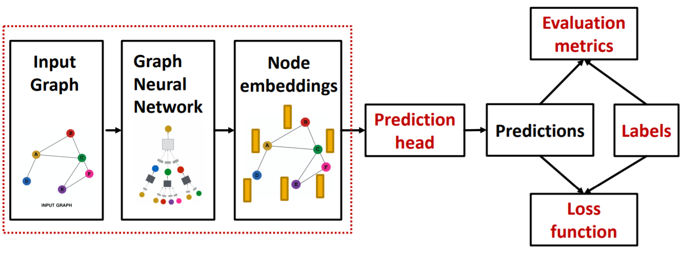
本文主要参考资料为CS224W的Lecture 8 & 9，课程视频可在Youtube观看。
Prediction with GNNs
GNN的预测任务可分为node-level，edge-level和graph-level。
对于node-level的任务，可以直接用节点的embedding进行预测
对于edge-level的任务，需要用一对节点的embedding进行预测
这里我们可以使用concatenation+linear
或内积等方法
对于graph-level的任务，需要用图上所有节点的embedding进行预测
这里的Head $_{\text {graph }}(\cdot)$函数与GNN中的聚合函数很相似，可以选用全局平均池化、最大池化、求和池化等。为了更有区分度，还可以采用分层池化的方法。
Training GNNs
根据是否有label，我们可以将GNN的训练分为有监督与无监督。在无监督的情况下，通常用图结构来做标签，比如预测节点间是否有边连接。GNN的无监督学习也可以称为是自监督。
根据label是离散还是连续，可以将其分为分类问题或回归问题，分类问题常用的损失函数为交叉熵，回归问题常用的损失函数为均方误差。对于不同的问题也有不同的评价指标。
数据集的划分
对于图数据来说，不同节点间是有联系的，因此数据集的划分相比图像分类等任务更为复杂，常用的方法可分为两类：
Transductive Setting: 全图的结构在训练集、验证集、测试集都是可见的，只对label进行分割。该类方法只能用于node-level和edge-level的任务。
Inductive Setting: 将图分割为三部分，训练集、验证集、测试集都只包含部分图结构。该类方法能够用于node-level，edge-level和graph-level的任务。
接下来以连接预测问题为例介绍一下如何划分数据集。
对于连接预测任务，我们首先将边分为两部分，一部分是用于GNN的消息传递的，即输入给GNN的图，一部分是用来做label训练GNN的。
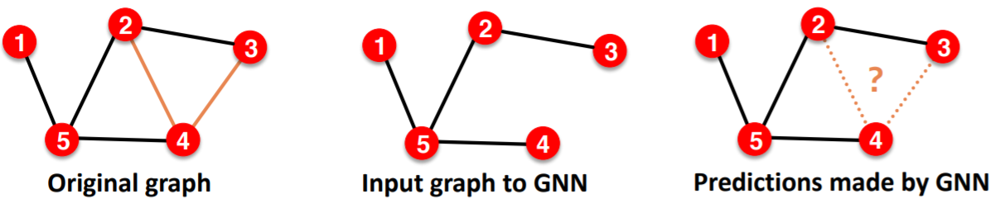
对于Transductive Setting，全图的结构在训练集、验证集、测试集都是可见的。需要注意的是，在验证的时候训练集中的标签是已知的，在测试的时候训练集和验证集的标签是一致的。这样设置是因为一个理想的模型能够在训练的时候预测出训练集中的label对应的边，因此在验证的时候就应该利用这些信息以求更好的预测效果。
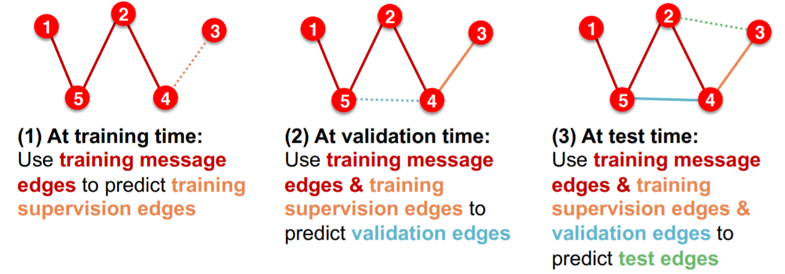
对于Inductive Setting，训练集、验证集、测试集包含不同的图，每个图中的边都分为消息传递边与作为标签的边。
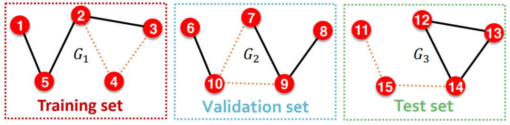
How Expressive are GNNs?
在这部分我们会讨论GNN的表示能力及如何设计具有最大表示能力的GNN。
GNN的表示能力
对于如下每个节点都具有相同特征的图，由于节点对应的的局部图结构不同，节点1和5,节点1和4都是不同的。那么GNN能够区分这些结构上的不同之处么？
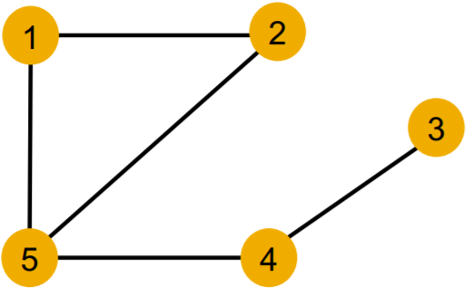
GNN是通过计算图来捕捉图结构的，且节点对应的计算图与其对应的根子树结构(rooted subtree structure)是一样的。对于具有最大表示能力的GNN，其输出的embedding应该能够区分不同的根子树结构。也就是说，GNN构成的根子树到embedding的映射应该是单射的，即不同输入对应不同输出。
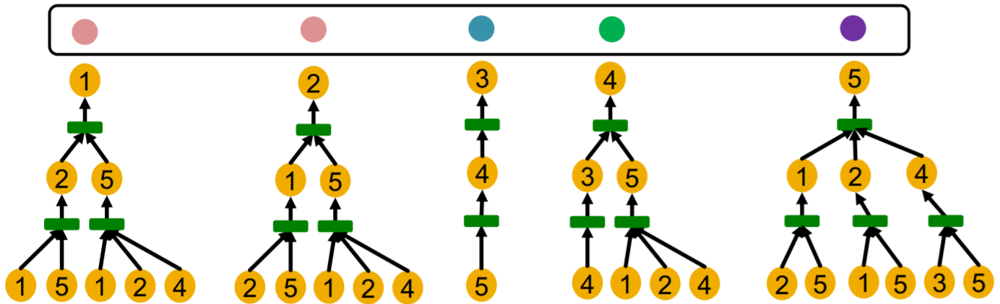
如果GNN的每一步聚合都能够完全保留邻居信息，则其生成的embedding就能够区分不同的根子树。
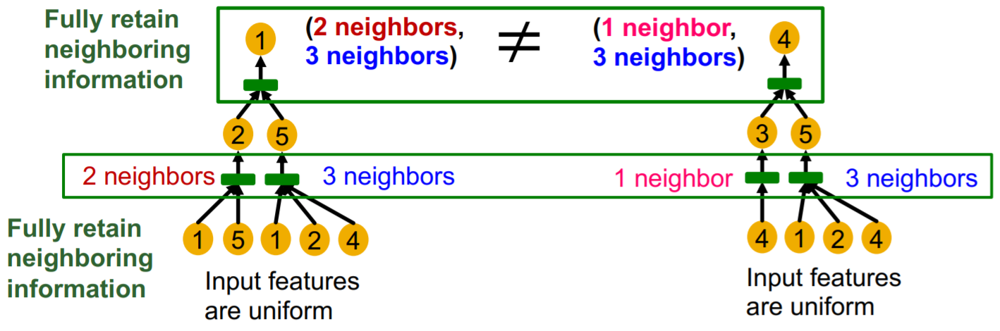
因此，具有最大表示能力的GNN的聚合函数应该是单射的。
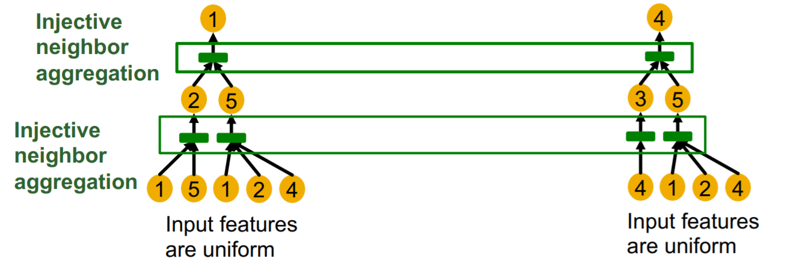
如何设计具有最大表示能力的GNN
聚合函数可以看做是一个关于多重集合的函数。
均值池化聚合函数是无法区分如下输入的
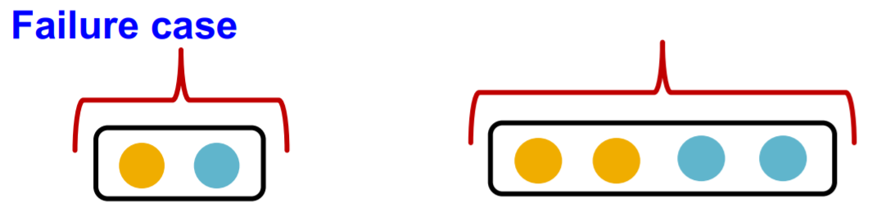
最大池化聚合函数是无法区分如下输入的
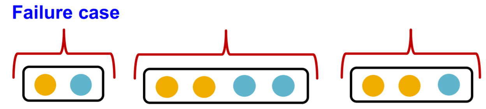
因此，均值池化和最大池化都不是单射函数，基于这两类聚合函数的GNN也不具有最大表示能力。
在HOW POWERFUL ARE GRAPH NEURAL NETWORKS?这篇文章中证明了任何单射的多重集函数都可以表示为
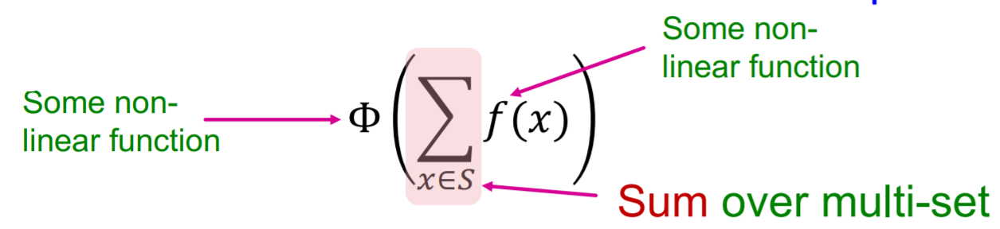
而根据Universal Approximation Theorem，足够大的单层MLP能够以任意精度近似非线性函数。Graph Isomorphism Network(GIN) 就是用MLP来替换上式的两个非线性函数
GIN的聚合函数是单射的，因此其具有最大表示能力。GIN还可以看做是之前讲过的WL graph kernel的神经网的形式，因此两者的表示能力是相同的，而WL graph kernel已证明可以区分大部分的图。
尽管GIN的表示能力相较之前的基于其他聚合函数的GNN已经有了极大的提升，但他仍是基于根子树也就是计算图的，因此是无法区分具有相同计算图的不同节点的，如下图的节点$v_1$和节点$v_2$。
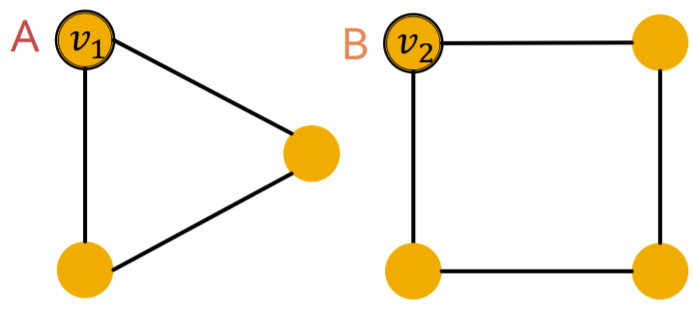
在GIN之后Jure组还发了两篇提升GNN表示能力的论文，能够解决上述问题，以后有空再看。
Identity-aware Graph Neural Networks
Distance Encoding: Design Provably More Powerful Neural Networks for Graph Representation Learning